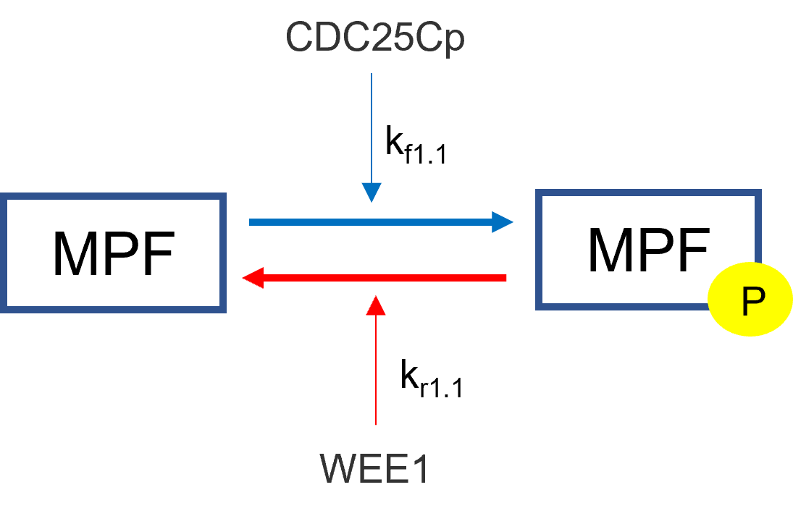

Law of Mass Action
Chemical reactions are derived using the law of mass action. Given the following chemical reaction scheme:
where a, b, c, d are stoichiometric coefficients and A, B, C, D are the chemical species. The law is as follows:
From the above law, each individual term is derived below:
Each individual equation will be added to their overall flux differential equation in the differential equation solver section.
Law of Mass Action with Regulation
Mass action with regulation is for chemical reactions who have rate constants that are dependent on other species. An example is the regulation of inactive MPF to active MPF in the cell cycle by WEE1 and CDC25Cp. In this example, inactive MPF is phosphorylated by CDC25Cp and dephosphorylated by WEE1. These regulators are not directly affected in the their differential equations in this situation while inactive and active MPF are. We have the same derivation as mass action except the rate constants are changed to reflect the regulation.
{kind=link}

The regulators will take the respective place of the rate constants in the mass action derivation. In the mass action derivation above for “a” and “b” we have:
Adding regulator replaces the respective rate constant with the sum of its regulators and rate constants:
Using the above example, we get the following result:
Synthesis
Synthesis by rate has a species generated at a specific rate. This is useful for when the user does not particularly now what is causing the synthesis but knows how quickly it is being produced. It simply creates a constant rate of production.
where,
- \(k_{syn}\)
synthesis rate of species
Synthesis by Factor
The “By Factor” law is used when a factor directly influences the synthesis of a species but is not directly converted. An example of this is in the Cell Cycle when the molecule E2F activates transcription factors that synthesize Cyclin E and Cyclin A. If the cell contains no E2F, then there is no synthesis of Cyclin E or A.

There is only one resultant mathematical flux from this type of synthesis and that is the species being synthesized. The factor causing the synthesis does not have its flux altered. The general resulting equations are:
where,
- \(k_{syn}\)
synthesis rate of species
- Species
species that is being synthesized
- Factor
factor that is causing the synthesis
In relation to the above E2F equation, the differential equations are:
Degradation
These reactions are dependent on a rate constant. Here we have two specific options where the degradation can be concentration dependent or not. Often degradations are concentration dependent on themselves, meaning there is more degradation at higher concentrations and vice versa. The following is the derivation for a concentration dependent degradation:
where,
- \(k_{deg}\)
degradation rate constant
- Species
species being degraded
When the degradation is not concentration dependent, the resulting flux is:
When products are made, they are the opposite sign of the above reactions. For example, for concentration dependent reactions with one degradation to two products we would have the resulting differential equations:
Degradation by Enzyme
This degradation option is a basic enzyme reaction using Michaelis Menten kinetics where the substrate is the species to be degraded and there often is no product. The resulting mathematical flux for the degraded substrate would be:
where,
- \(V_{max}\)
Maximum Velocity
- E
Enzyme Concentration
- S
Substrate Concentration
- P
Product Concentration
- \(K_M\)
Michaelis Menten Constant
- \(k_{cat}\)
Catalytic Rate of Enzyme Reaction
There is an option to add a product (P), which results in the mathematical flux equations to break down to pure Michaelis Menten kinetics for the product and substrate which would have the same equation above except with a positive sign: